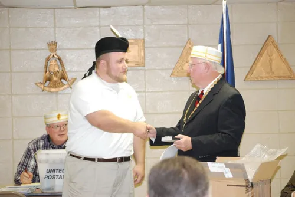
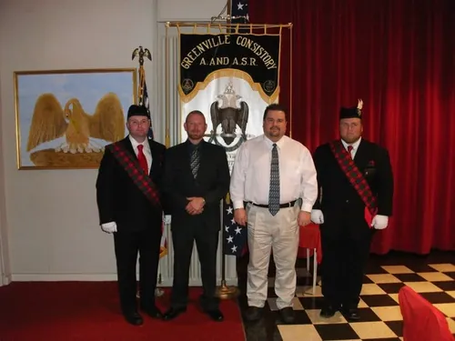

Scottish Rite, Valley of Greenville
November 19, 2010 · Greenville, South Carolina

“Illustrious Tom Henry presenting Brother George Latta with the Knight of the Double Eagle Award + red bar. (He cooked that night, hence the lack of a suit)”
“Bro Dennis Case 32° KSA, Bro Mark Alexander 32°, Bro Johnny Lemons 32°, Bro George Latta 32° KSA. This was taken at the end of the Fall Reunion 2010. ~Brothers Alexander & Lemons just joining Scottish Rite. All from Simpsonville Lodge.”

